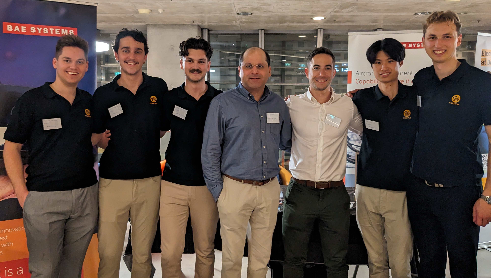

Control Systems Engineer | Engineering Professional
Welcome to my curated professional ePortfolio showcasing my academic, professional, and leadership experiences.
About Me
I am a 5th-year engineering student specialising in Mechatronic engineering. My professional expertise lies in PLC programming, robotics, CAD design, and automation solutions. I thrive on solving complex engineering challenges and leading teams to successful outcomes. My hands-on experience includes programming automated manufacturing lines, troubleshooting existing systems, and developing innovative solutions in warehousing.
Beyond my technical capabilities, I have taken on leadership roles as a youth development instructor with the Army Cadets and as the founder, events director, and president of a university engineering society. These experiences have sharpened my ability to guide teams, foster collaboration, and communicate effectively. I am a resourceful and innovative professional eager to contribute to impactful engineering projects.
Over the past two and a half years, I have worked as a control systems engineer, gaining hands-on experience in programming automated warehousing systems and manufacturing lines. My responsibilities included PLC programming, troubleshooting, and commissioning industrial automation lines, with a focus on improving efficiency and reliability.
In this role, I have learnt from those around me regarding becoming a professional engineer as well as being able to grow my technical skills through practical experience and my soft skills through observing of those around me and hands on activities such as running meetings and proposing crucial design changes.
During my time in this role one area I have strived to improve on is the Engineers Australia competency level, Personal Commitment through responsibility of Engineering Activities. I have found this to be very beneficial as at many times I may be working on up to 5 different projects at once. Documenting tasks that need to be completed and crossing them off when they are done has allowed me to be able to jump between these jobs at the drop of a hat and pick up where I left off with little delay. It was also useful when I was the person starting a job and then handing it over to someone else for them to commission as any questions regarding why I did certain things I could look back through my tasks and find the answers.
A colleague of mine was very good at documentation and was an inspiration to what the best methods were. He was able to tell me from his experience what software and methods he found the best. Following in his footsteps and using the same software allowed me to pick this up quickly as I could ask him questions if I was ever lost.
Pack Turning Cell
One of the projects I worked on from initial programming to commissioning and handover to a customer was the Pack Turning Cell. This was my first project where I was the only one involved from the control side.
The automation cell was added onto an existing manufacturing line. When this manufacturing line is run one style of product being made is only laminated on one side and is required to be flipped for storage and transportation to prevent bowing of the board. This pack turning cell is designed to do just that.
In this project I learnt the importance of communication and collaboration between teams whilst learning significantly about drives, motors and the different types of sensors. Notable experiences were going away to site to commission the line for multiple days and the learning of all the different machine safe standards which I had to adhere to and implement such as light curtains and estops as well as how to communicate these safe status' between multiple lines using different plc's.
During the commissioning process, I learnt the value of perseverance. There were many times when something was not working as it was supposed to. Sometimes this was as little as a typo all the way to the PLC losing values during a power cycle causing all sensors to lose their calibration causing packs to act unexpectedly and sometimes even crash and cause damage. Due to failing to have some interlocking conditions on the drives of some cross transfer conveyors I managed to wipe out a fence, a light curtain, a sensor and two sensor brackets and causing my line to be down for two days resulting in packs needing to be manually flipped.
Luckily with the help of on site fitters and electricians, this did not cause any delay in production and I was able to adjust my code and the line was operational again in time for the next time single sided boards were run.
The below video shows the line in operation.
Pack Turner In Operation
Leadership
Founder and Events Director and current President of UTSMechSoc
As the founder and events director of UTSMechSoc, I demonstrated visionary leadership by identifying a gap in student engagement and establishing a society that attracted over 400 members in its inaugural year. I successfully organised impactful events, including an industry networking night with over 300 attendees, fostering connections between students and professionals. These experiences strengthened my ability to inspire a team, plan strategically, and engage stakeholders effectively.
In my second year as president, I led a diverse team of 20 individuals, focusing on cultivating a collaborative and high-performing culture. I emphasised leadership development within my team by identifying members’ unique strengths and delegating responsibilities accordingly, enabling them to excel in their roles. I resolved conflicts, provided mentorship, and guided strategic decisions that ensured the society's continued growth. This role allowed me to refine my skills in team management, long-term planning, and creating a shared vision that drove tangible results for the society and its members.

Youth Development Instructor - Army Cadets
In my role as a youth development instructor, I mentored and taught leadership, teamwork, and technical skills to young individuals, focusing on their personal and professional growth. This role requires me to lead diverse groups in challenging environments, guiding participants through lessons and activities to build confidence and practical skills. I create engaging lessons to foster learning, supervise cadets during camps and activities, and ensure their safety, enabling a supportive environment for their development.
Academic Experience and Projects
University Of Technology Sydney
I am in my fifth and final year of my Mechatronics Undergraduate degree. Throughout my degree, I have had the pleasure of working on varying projects. Some of my most proud ones are listed below.
These projects have grown my technical ability as well as my interpersonal, leadership and organisational skills as all involved significant group collaboration.
Turtle Bot Warehousing system
The Turtlebot warehousing robot autonomis item picking and delivery in warehouses using a scalable system of robots. Initially, a single robot maps the warehouse, creating a static map while avoiding dynamic obstacles like people or forklifts. The system assigns tasks to robots based on proximity and payload capacity, coordinating item retrieval and delivery to a drop-off zone. Using lidar, the robots dynamically avoid obstacles, including each other, to maintain efficiency.
My focus was on the payload delivery system, a 3D-printed mechanism with a servo-driven trap door. Mounted on the top of the robot, it securely carries and dispenses items from the pick-up to the drop-off zone. Controlled by an Arduino Nano that listens for a signal from the Raspberry Pi the turtle bot is running on. By being mounted above the Lidar the system minimises interference with the lidar for smooth operation.
See the below project video for more information.
This project involved simulating a robotic system with two robots, one of which required designing both its physical and kinematic models. The system was tasked with performing a pick, place, and sorting operation to organise blocks by colour. This included a GUI, obstacle detection, and a physical emergency stop button that worked in both simulation and on real hardware. A RealSense camera was used for vision, providing both colour and depth data.
Through this project, I gained a deeper understanding of robotics mathematics, including kinematics and singularity errors. This insight connected theory to my practical experience as a control systems engineer, where I had recently encountered similar challenges with Fanuc robots. Learning the theory behind why robot joints cannot align straight, to avoid singularity errors, was particularly valuable as it directly addressed a real-world problem I had faced.
See the below Project Video for more details and video examples.
Robotic Control Project Video
AI Tetris
In AI in Robotics, my group project was to program an AI model that could play Tetris. We successfully achieved this goal.
The Tetris AI project uses Deep Q-Networks (DQN) and reinforcement learning to optimise gameplay. The AI evaluates the best moves based on board metadata, enabling it to plan for combos like "Tetris clears" while minimizing gaps and towers. It generalises well across board sizes, such as a 30x20 grid, despite training exclusively on a standard 10x20 grid. By analyzing final states instead of individual moves, the model achieves efficient, adaptable, and high-performing gameplay.
This group project involved leveraging the Boston Dynamics SPOT robot for search-and-rescue operations in challenging and potentially hazardous environments. We developed a ROS1 package to facilitate autonomous exploration and human detection, making the system accessible for anyone to install and use. The onboard video feed from SPOT was integrated with YOLOv3 for human identification, achieving a confidence threshold of 80%. Since the pre-trained human detection model met our needs, no additional model training was required. When a human was detected, a marker was placed on a global map, allowing rescuers to pinpoint their exact locations.
Exploration of the environment utilised a greedy frontier-based algorithm, ensuring complete area coverage. Once SPOT finished exploring, the total number of markers on the map provided the rescue team with a clear overview of all detected individuals and their locations.
This project was also a significant learning experience for me. It marked my first exposure to ROS, Linux, and Git repositories, helping me build confidence in installing and integrating different packages into robotic projects. These new skills have expanded my technical capabilities and prepared me for future projects.
Check out my project portfolio which covers everything in more detail.
Download Project Portfolio.
As a part of the Mechanical and Mechatronic Society, a society build project that I was the events director and organiser for was the THOR robot build. This is an open-source robot build that we thought would be a great initiative for our members. The project would allow our society to own a robot that we could show off at open days but through the process of building it weekly, we could meet and interact with more of our members and create a greater sense of community.
Teamwork and Service
Collaboration has been fundamental to my success in academic, professional, and leadership capacities. Across various roles, I have demonstrated exceptional interpersonal and organizational skills to achieve team objectives. Key aspects of my teamwork experience include:
Coordinating Multidisciplinary Teams: Successfully leading diverse teams to achieve shared goals by leveraging individual strengths and fostering collaboration
Encouraging Open Communication: Promoting a culture of transparency and problem-solving to address complex challenges effectively.
Mentoring Team Members: Sharing knowledge and guiding peers in leadership and technical skills.
Fostering Continuous Learning: Creating an environment where team members feel supported and motivated to grow.
In my role as the founder and president of UTSMechSoc, teamwork was the backbone of our success. I managed work distribution based on individual strengths, resolved conflicts, and collaborated with other societies to organise impactful events that benefit the student experience. I also led a small team as SUO2 of Training in the cadets, where we oversaw the execution of a comprehensive training program for the over 300 person unit.
In my professional career, teamwork has been pivotal in the successful completion of projects. Whether initiating projects for others to deliver, collaborating with multiple individuals on overlapping tasks, or ensuring seamless integration across sections of a manufacturing line, I consistently emphasised effective communication and equitable work distribution to achieve results.
Professional Capabilities
Technical Skills
Control Systems Design and Programming
PLC Programming (Siemens, Ladder Logic)
Experience with Siemens and SEW Drives
Robotics Programming (Fanuc, Roboguide)
CAD Design and Development
Experience in Factory Acceptance Testing (FAT) and Commissioning